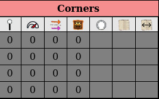

What is this about?
This allows Heat fans to make their fanmade circuit playable online on BGA. This is not a tool to help make a custom circuit, but instead to more easily track relevant information that BGA needs to be able to play on an unofficial board.
Prerequisites
Obviously the first thing you will need is in asset of the custom circuit you want to work with. In the following, we
will illustrate the process with the USA map displayed below. Make sure your jpg file has a
width of 1650px before moving to the next step.

1] Extracting the track from the board
The first step consist of processing the jpg file to generate a png file that contains exactly 1 black zone for each cell:

As showed in the image, you need to separate the two cells that share a same position on the circuit. This is probably the step that takes the most time in the whole process. Make sure to have your png file that perfectly overlays your jpg file.
2] Converting to an SVG
Using this cells-only asset, we will rely on inkscape to vectorize our track into an svg file where each cell
corresponds to a path, which is what the editor will use to automatically compute the center and direction of the cells.
Just open your png image with inkscape Path > Trace Bitmap (shortcut Maj + Alt + B):
(you can play around with options for better results, for instance 'speckles' allows to remove unwanted black zones)
Once you have the vectorized version, make sure to remove the image without moving anything around, using the XML
editor for instance (just click on the 'svg:image' line and hit 'suppr').
Now we just need to break apart that big path into individual paths: click on the path and hit Shift+Ctrl+K (Path >
Break apart). Check that you have the expected number of cells by checking the bottom bar:
3] Uploading the jpg online
You have done the hardest part, now the last step before using the editor is to make the jpg asset available online. You can use any platform as long as you have a direct access on the original asset, which imgur does for instance. Description of the process for uploading on imgur:
- Upload the image
- Copy the link (button appears when hovering on image)
- Open a new tab and paste the link
- Click on the image to zoom in
- Right-click > Copy link to image
- Check that link is working by opening a new tab and pasting the URL: you should access your image directly without any imgur interface
4] Creating the circuit in the editor
You can new create a new project in the editor by filling up the left form. Make sure to use a relevant ID for your circuit to make it easier to know what the file circuit is about later. You can now check that steps 1] and 2] were correctly done by just hovering on the board: you should see cells being highlighted as you move through them, hopefully perfectly aligned with background image. Before we explain how the editor is working, let's talk about saving/resuming progress. You will notice a "download" icon on the very top left of the interface. Clicking on this will generate a .heat file that you (or anyone else) can open later to resume work on it. Additionally, if you stay on the same computer (and not clearing all the cache of your browser), you can directly load your ongoig work from browser storage.
5] The top bar: basic informations about the circuit
On the top bar you can find:
- : as explained before, this allows you to download the circuit as a .heat file that you can reopen later. This file can also be used to play on bga but please see next item instead.
- : this will give a .heat file much smaller, with only the relevant informations needed to play on BGA. This file cannot be loaded in the editor later, it's only for BGA.
- : click on this to change the URL of the jpg asset
- ID, Name, Lap length: these cannot be changed
- : number of laps, click on it to edit
- : number of heat cards, click on it to edit
- : number of stress cards, click on it to edit
- : number of corners, click on it to edit
- : position of the weather card, click on it and then on the board to edit
- : position of the podium, click on it and then on the board to edit
- : open me again if needed
Make sure you fill out all these basic informations before moving on to next step (they should go green once done).
6] Computing the centers
The first thing we are going to do is to compute the center of each individual cell to be able to place the car on it on BGA. Thanks to the svg we made, it's actually the computer that is going to do that for us: just click on in the left bar in the "Corners" section and you are done! If some centers are not perfect, you can always edit them by clicking on the and clicking inside the cell at the desired location. Once you are done, make sure to hit again to get out of edit mode.
7] Computing the directions
Now we are going to compute the direction/angle of each cell to rotate the car accordingly. Once again, the computer is going to do that for us when we hit . But wait, some arrows are going into the wrong direction here! This is expected as the computer can't guess what should be the correct direction of race, so it will always makes them point "to the right". Hopefully, this is easy enough to fix: just enter into swap mode by clicking on and click on a cell to swap the direction. As with edit mode, make sure you click again once you are done As we the centers, if you want to edit an arrow (can be sometimes off in hard corners), just click on , click on the cell, then click toward the direction you want to have (you must click inside the cell). Again, make sure to toggle off edit mode once you are done with it.
8] Computing the neighbours
Using centers and directions, the computer is now going to find the two cells in front of each cell of the circuit when we hit . You can check them by hovering on a cell, neighbours will be highlighted in lighter gray. If you notice at this point that computation is wrong because some arrows are pointing in the wrong direction, you can edit/swap the arrows and hit to overwrite previous computation of neighbours. However if some neighbours are still wrong eventhough all the directions are correct (this can happen for hard corners), you can change them by turning on the edit mode hitting : click on a cell with invalid neighbours, click on adjacent cells to remove/add them, then click on the initial cell again to finish editing this cell.
9] Computing the lanes
Using neighbours, the computer will now automatically compute the two lanes of the circuit. You just need to first enter the starting position of first car and of second car by clicking on on the left and then on the corresponding cell on the board. Now you can hit and admire the result. If you have a warning about "Invalid number of neighbours", don't panic. Just look at where the computation stopped and solve the issue before hitting again. If you get no error, you should see a completely labeled circuit:
10] Filling out informations about the corners
The last step is to enter information about each corner on the left bar. You should already have as many lines as the number of corners, filled with default values.  For each individual line, click on the corresponding cell to insert informations:
- : position at whice the corner starts. You must indicated the label on the cells just before corner line (12 for first USA corner for instance)
- : maximum speed allowed for this corner.
- : what is the racing line after that corner?
- : position of the legend lane. Same as for position of the corner (eg first corner of USA is 2).
- : click on the board to position the corner circle. Useful for highlighting the corner on BGA and to place press corner
- : click on the board to position where the road condition token will be displayed for that corner
- : click on the board to position where the road condition sector token will be displayed for the sector starting after that corner
Play it on BGA! Share it with others
Download the file and use it on BGA by selecting "Circuit: custom" when creating a new table. Have fun playing your custom circuits!